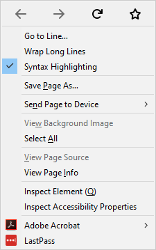
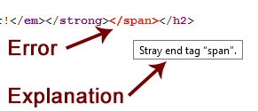

View Source lets you look at the HTML or XML source for the page you're viewing. To activate View Source:
The command opens a new tab with the source for the current page.
View Source has three additional features, which can be accessed from the context menu in the View Source tab:


This feature is useful when you're looking for HTML errors.
To access Go to Line from the keyboard, press Control + Option + L on macOS, or Alt + Shift + L on Windows or Linux.
It is possible to link to a particular line, by adding the #lineNNN anchor to the url the browser will jump to the NNN line.
For example view-source:https://www.mozilla.org/#line100
If you select part of a web page and context-click, you'll see a context menu item labeled "View Selection Source", that behaves just like "View Page Source", except you only see the source for the selection.
If you context-click while the mouse is over some MathML, you'll see a context menu item labeled "View MathML Source": click it to see the MathML source.
There are limitations to what View Source does for you that you need to be aware of.
View Source only reports parsing errors, not HTML validity errors. For example, putting a {{ HTMLElement("div") }} element as a child of a {{ HTMLElement("ul") }} element isn't a parse error, but it is not valid HTML. Therefore, this error will not be flagged in View Source. If you want to check that HTML is valid, you should use an HTML validator, such as the one offered by W3C.
Even though all the reported errors are parse errors according to the HTML specification, not all parse errors are reported by View Source. Among the errors that don't get reported:
xmlns attributes aren't reported.View Source uses the HTML tokenizer when highlighting XML source. While the tokenizer has support for processing instructions when highlighting XML source, that's the only XML-specific capability provided. Because of this, doctypes that have an internal subset are not highlighted correctly, and entity references to custom entities are also not highlighted correctly.
This mishighlighting can be seen by viewing the source of Firefox chrome files (such as XUL documents). However, this shouldn't be a problem in practice when viewing typical XML files.